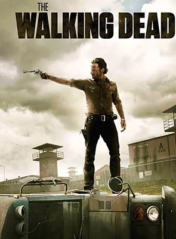

The Walking Dead
Una serie de televisión estadounidense de drama horror postapocalíptico de AMC basada en la serie de cómics homónima de Robert Kirkman, Tony Moore y Charlie Adlard. Basado en la historieta escrita por Robert Kirkman, este drama crudo describe las vidas de un grupo de sobrevivientes que está siempre en movimiento en busca de un hogar seguro durante las semanas y meses de un apocalipsis zombi.
El ayudante del sheriff, Rick Grimes del condado de King en Georgia, se despierta de un coma descubriendo un mundo invadido por zombis ("caminantes"). Después de hacerse amigo de Morgan Jones, Rick viaja solo a Atlanta para encontrar a su esposa Lori, su hijo, Carl, y su compañero policía y mejor amigo, Shane Walsh, y se encuentra con otros sobrevivientes. El grupo viaja a los Centros para el control de enfermedades (CDC), pero el único miembro restante del CDC descubre que no existe cura para la pandemia.
A partir de ahora todo empezará a ser muy emocionante, acompañanos a ver esta serie